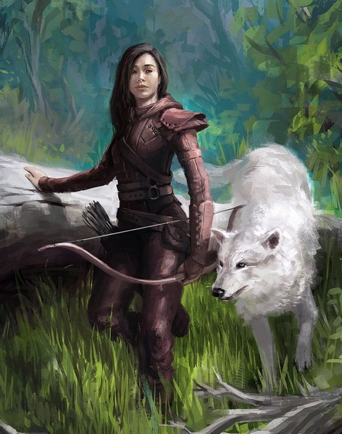

NSCs
Cataryma

- Aufgeweckte, neckische Waldläuferin
- Gehört zur ehemaligen Abenteurergruppe von Malduk.
- Junge Wildhüterin und Partnerin Malduks.
- Sie sieht exakt aus wie Ireena und vermutlich auch wie Tatyana.
- Geboren ca. 706
- War mit ca. 20 schon Abenteurerin, traf Malduk mit ca. 22 (er 20)
- Wurde Mutter mit ca. 48 – durch den Entropiezauber körperlich gealtert auf 78
- In Stasis eingefroren – ihre Zeit steht still
- In ihrem Kokon wirkt sie wie eine uralte, aber sanft lächelnde Frau
Cataryma – Die Pfadfinderin der Wahrheit
- Herkunft: Tochter eines kartographischen Offiziers der kaiserlichen Grenzgarde. In den Wäldern der Nordmarken aufgewachsen.
- Frühe Prägung: Sah als junges Mädchen, wie ein Dorf wegen angeblicher Feenverehrung niedergebrannt wurde – ihr Vater half beim Vermessen des Gebiets danach.
Seither hat sie ein Misstrauen gegen staatliche Wahrheit und Repräsentation.
- Motivation: Cataryma glaubt, dass das Reich nicht zerfällt wegen Magie, sondern wegen Verleugnung.
Sie sucht verlorene Wahrheiten, verbotene Texte, verborgene Orte.
- Anführerin? Nicht offiziell – aber sie ist der emotionale Mittelpunkt. Die erste, die aufsteht. Die letzte, die schläft. Wenn es weitergeht, gehen die anderen mit ihr.
Sie fragt nicht nach Befehlen – sie handelt.